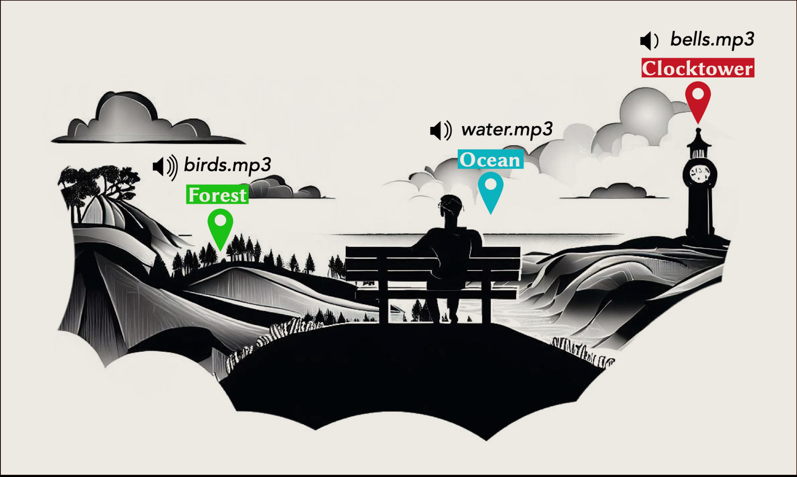

Sonic Vista
We are building a wearable artifact for people with visual impairments, called SonicVista, that can provide information and experience of distant surrounding environmental scenes (that are beyond audible range) through generative sounds.
We are exploring the use of Meta's ARIA glasses in this project.

April 2024: Our paper titled SonicVista: Towards Creating Awareness of Distant Scenes through Sonification accepted in Proceedings of the ACM on Interactive, Mobile, Wearable and Ubiquitous Technologies (IMWUT) 2024.
March 2024: I and my colleague Shreyas were invited to present our work at Meta's ARIA Summit in Redmond WA, USA.